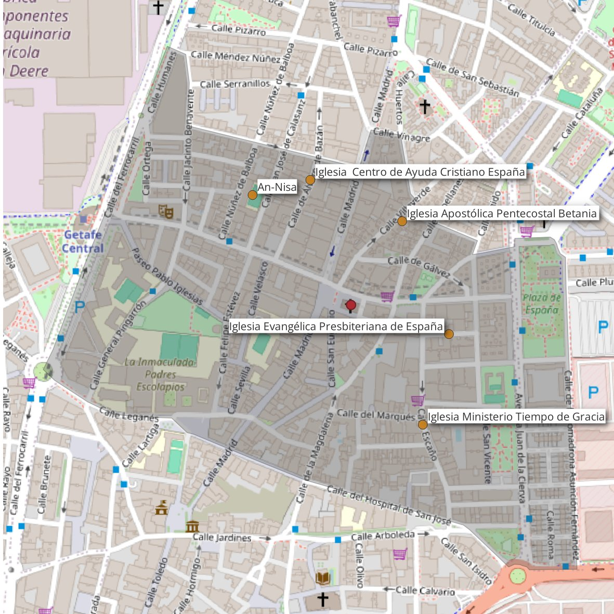
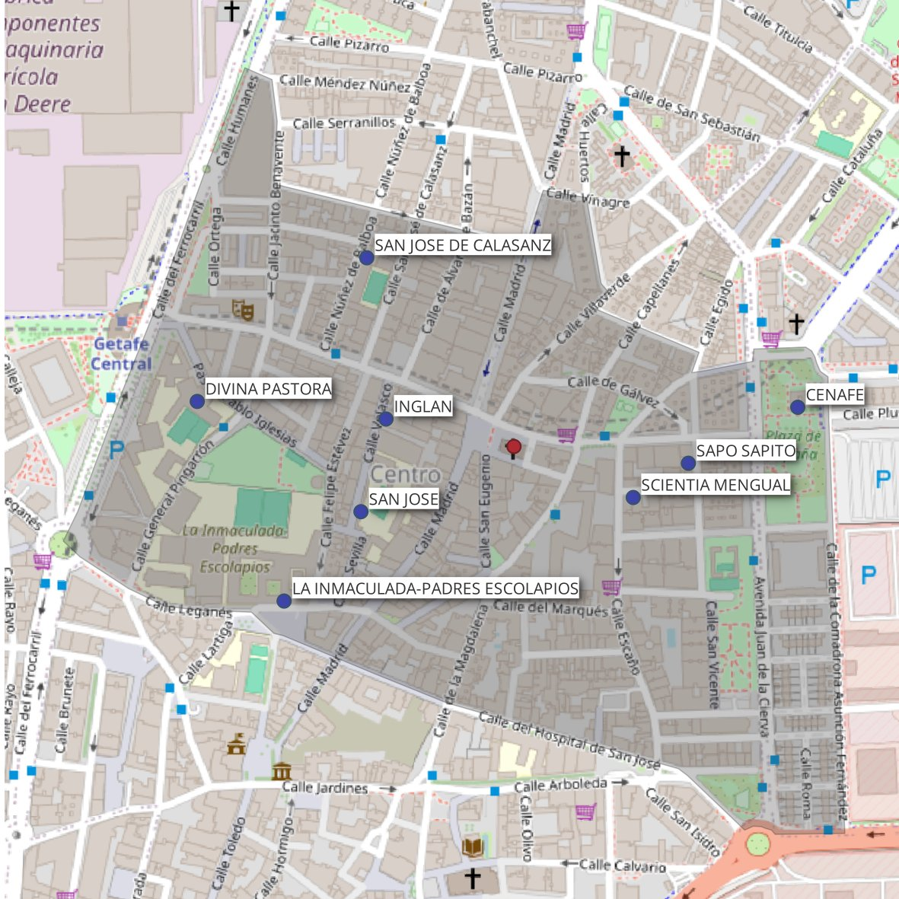

Puntos de interés en el territorio parroquial
Parroquia San Eugenio (Getafe) · Arciprestazgo de Getafe
Entidades religiosas no católicas

5 entidades religiosas no católicas en el territorio de la parroquia.
Evangélicos (4)
- Iglesia Centro de Ayuda Cristiano EspañaCalle Álvaro de Bazán 6, Getafe
- Iglesia Apostólica Pentecostal BetaniaCalle Villaverde 24, Getafe
- Iglesia Evangélica Presbiteriana de EspañaCalle Cuenca 1, Getafe
- Iglesia Ministerio Tiempo de GraciaCalle Escaño 47, Getafe
Musulmanes (1)
- An-NisaCalle Núñez de Balboa 10 6º D, Madrid
Fuente: Registro de Entidades Religiosas del Ministerio de la Presidencia, Justicia y Relaciones con las Cortes. Situación en el mapa: dirección geocodificada con CartoCiudad (IGN) o Nominatim (OpenStreetMap).
Centros educativos

8 centros educativos en el territorio de la parroquia (privado concertado: 5, privado: 2, público: 1).
| Centro | Tipo | Titularidad | Domicilio | Web |
|---|---|---|---|---|
| CENAFE | Centro autorizado de enseñanzas deportivas grado medio y superior | Privado | Plaza ESPAÑA, 6, 28903 Getafe | Página web |
| DIVINA PASTORA | Centro privado de educación infantil, primaria y secundaria | Privado concertado | Paseo Pablo Iglesias, 5, 28901 Getafe | Página web |
| INGLAN | Centro privado de formación profesional específica | Privado concertado | Calle de la Paloma, 5, 28904 Getafe | |
| LA INMACULADA-PADRES ESCOLAPIOS | Centro privado de educación infantil, primaria y secundaria | Privado concertado | Plaza Obispo Felipe Scio Riaza, 1, 28901 Getafe | Página web |
| SAN JOSE | Centro privado de educación infantil, primaria y secundaria | Privado concertado | Calle Velasco, 2, 28901 Getafe | Página web |
| SAN JOSE DE CALASANZ | Colegio de educación infantil y primaria | Público | Calle Núñez de Balboa, 10, 28902 Getafe | Página web |
| SAPO SAPITO | Escuela infantil privada | Privado | Calle San Vicente, 19, 28901 Getafe | Página web |
| SCIENTIA MENGUAL | Centro privado de educación infantil y primaria | Privado concertado | Calle Cuenca, 2, 28902 Getafe | Página web |
Fuente: registro de centros educativos de la Comunidad de Madrid. Solo se recogen los centros en situación de alta.